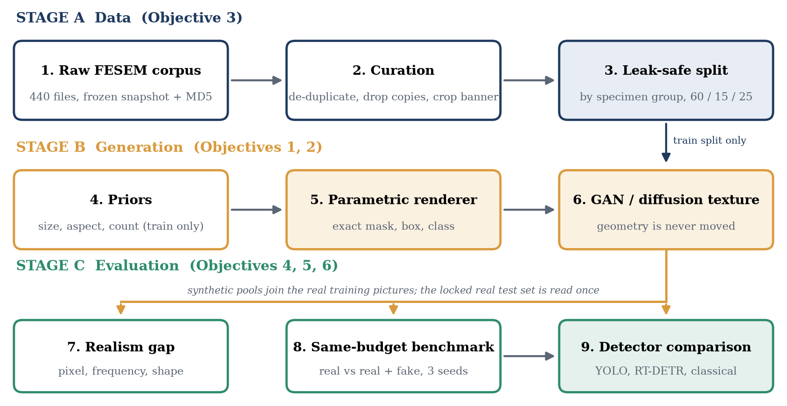
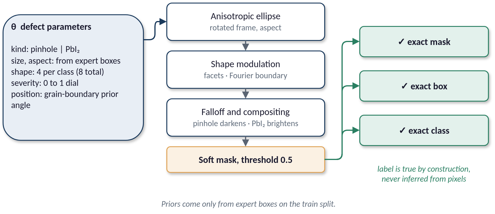
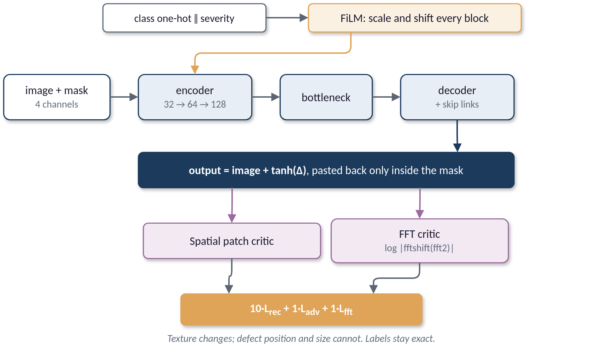
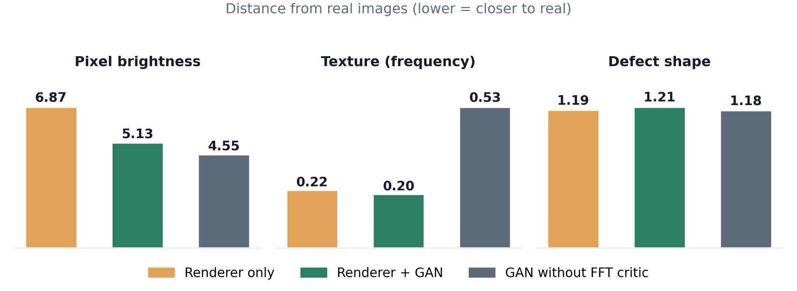
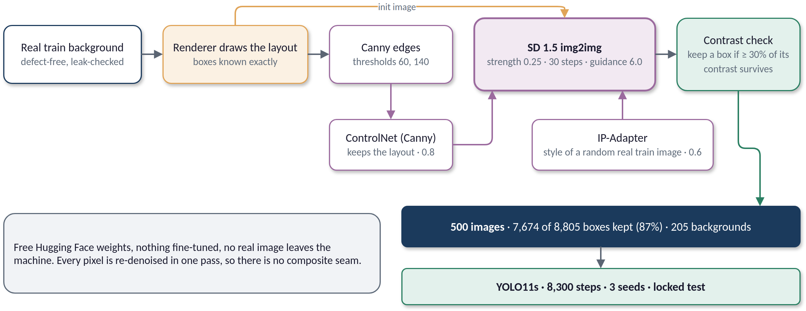
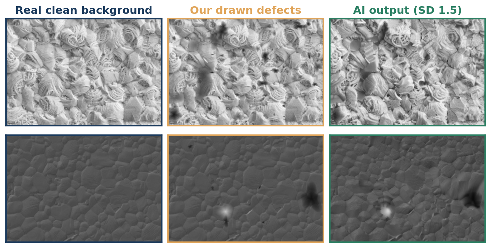
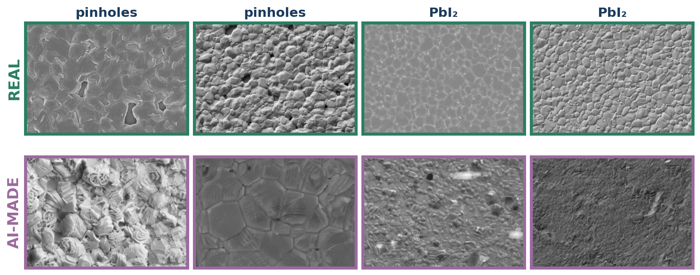
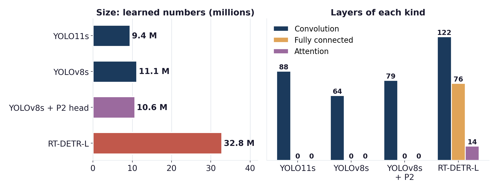
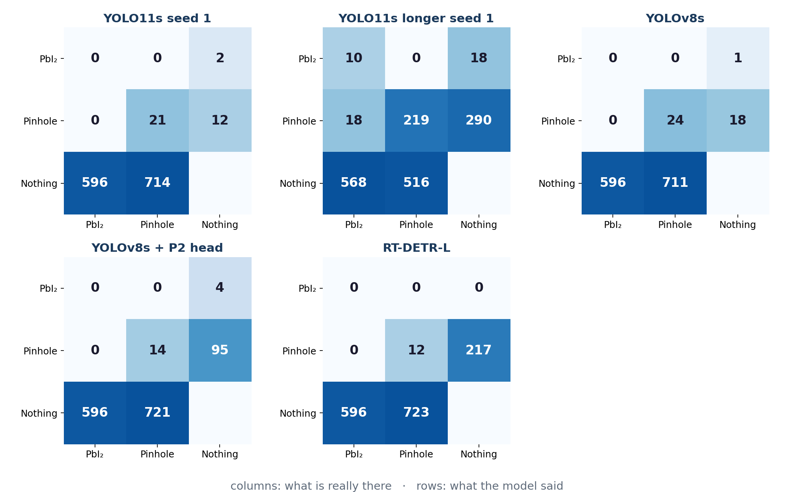
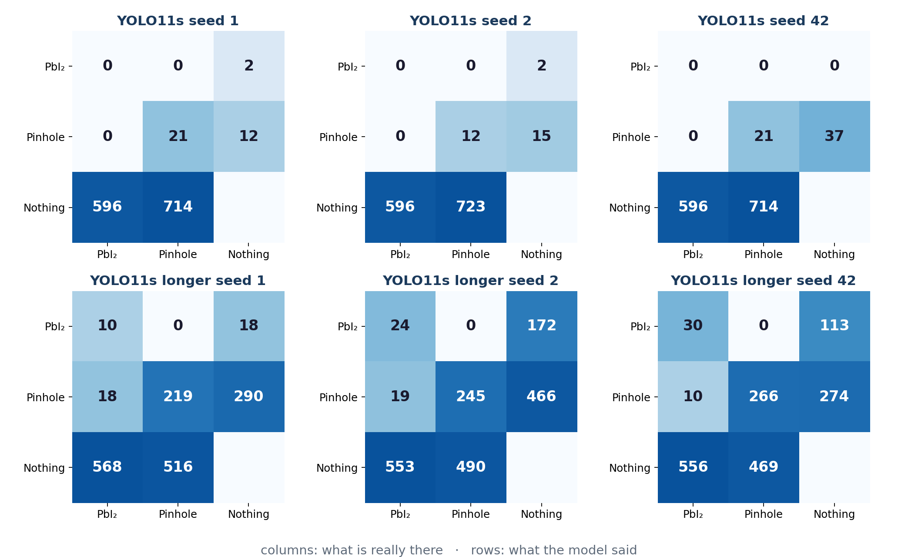

Generative Modeling and Microstructural Characterization of Perovskite Solar Cell FESEM Imagery
Synthetic images matched real ones, but did not beat them. Perovskite solar-cell FESEM images are rarely labeled. I built five kinds of synthetic training pictures and tested each against real-only training under three fair-test rules. Flip the switch to see how an unfair comparison made the synthetic pictures look almost twice as good.
Research objectives
The same six objectives used throughout the Phase 1 Dissertation. Click a card to open its evidence.
Three rules for a fair test
Every number in this dashboard follows them.
Hypotheses against the evidence
From the Phase I report, Chapter 4.
From 440 files to 273 clean images
Duplicates and unlabeled pictures were removed before any split.
Leakage in the old split
The original split placed copies of one specimen in training and test.
Train / validation / test
Split by specimen, 60 / 15 / 25, seed 42. Choose the metric to display.
Defect boxes per class
Pinholes far outnumber PbI₂.
Locked test set by defect size
1,331 real defect boxes in 73 test pictures. Size measured in pixels; the smallest bin is below the detector's stride.
How the synthetic pictures were made
From simple drawing (1) to AI generation (5). Labels are known for every synthetic defect. This tab covers the drawn renderer and the GAN refiner; Stable Diffusion has its own tab.
Overall pipeline

Parametric renderer and GAN refiner


Renderer
Labels are written by the same code that draws the defect.
- Synthetic pictures
- 10,000
- Exact boxes
- 518,943
- Defect shapes
- 8, from published observations
- Classes
- pinhole, PbI₂
- Placement
- on grain boundaries, real size prior
- Backgrounds
- clean real training pictures only
GAN refiner
Changes appearance only; the label stays valid.
- Network
- U-Net + FiLM, GroupNorm
- Input
- 4 channels (picture + defect mask)
- Conditioned on
- class and severity
- Critics
- spatial + frequency (FFT)
- Training
- 192 px patches · batch 16 · AdamW · mixed precision · 30 epochs
- Best epoch
- 19, reconstruction error 0.0458
- Checkpoint chosen on
- reconstruction, not adversarial loss
How real do the synthetic pictures look? (Objective 4)
Distance from 40 real pictures at three levels. Lower is closer. The GAN brings pixels closer, and its frequency critic keeps the texture close. Realism did not predict usefulness (see Results).

Stable Diffusion: an extra test of hypothesis H3
Every earlier synthetic picture was a composite: pixels pasted or drawn onto a real film. H3 asks whether a picture repainted as a whole, with no pasted edges, helps a detector more. I built this arm after the drawn and GAN pools did not help. The renderer still draws the layout, so box positions are known; the diffusion model then repaints lightly, and any defect it erased is dropped from the labels.

1 · Which diffusion model? The audit of five
Same 20 drawn layouts (5 per type), same Canny condition, strength 0.5, 30 steps, guidance 6. “Kept” = share of drawn defects still visible after the repaint.
Real and generated pictures, per model
A real picture of the same kind next to what each Stable Diffusion model generated from the same drawn layout.
2 · Chosen settings (SD 1.5 pool)
One RTX 3050 Ti laptop GPU, 4 GB.
- Base model
- stable-diffusion-v1-5
- Mode
- img2img on the drawn composite
- Strength
- 0.25
- Steps / guidance
- 30 / 6
- ControlNet
- Canny (60, 140), scale 0.8
- IP-Adapter
- scale 0.6, random real train picture
- Size
- 512 × 352, greyscale
- Backgrounds
- 40% plain (205 of 500)
- Seed
- 42
- Memory
- 0.44 GiB with sequential CPU offload
- Speed
- 11.2 s per picture
3 · Strength sweep
Higher strength repaints more and erases more defects. 0.25 was chosen: labels before prettier texture.
4 · The pool as built
500 pictures. Of 8,805 drawn boxes, 7,674 were kept (87%). Class mix kept: 6,686 pinhole, 988 PbI₂.
Small defects are erased more often, so the pool under-represents defects below 8 px. That is stated, not hidden.
Drawn layout → Stable Diffusion picture
Pool samples (left: drawn composite, right: repainted with surviving labels).
5 · Detector results: real vs generated
YOLO11s, locked test set, 3 seeds, 8,300 training steps. Real only = 100.
AP50 by defect size
Comparisons (Welch p)
6 · Is any picture a copy of a real one?
DINO ViT-B/16 similarity of each generated picture to the real training pictures, against how similar real pictures are to each other.
0 of 500 flagged above the real-to-real 99th percentile; 0 near-copies by pixel correlation (> 0.95). They would be safe to share.
7 · Reading against the pre-registered rules
Thresholds were written before generation finished.
Report figures for this arm


Detector models used for training
Four learned detectors and one classical method, all trained on the same real pictures and scored on the same locked test set (Objective 6). Parameters, epochs and training time come from the experiment logs.
Benchmark scores
Locked test set: 73 pictures, 1,331 boxes. YOLO11s rows are means of three runs; others one run (seed 42). Precision is low because every guess is counted.
Training setup (same for every model)
None of the models was tuned.
- Picture size
- 640 × 640 px
- Batch
- 8 (RT-DETR-L: 4)
- Epochs
- up to 100; 415 for longer real-only
- Early stop
- no gain for 30 epochs
- Starting weights
- COCO pre-trained
- Learning rate
- 0.01, 3 warm-up epochs
- Momentum / decay
- 0.937 / 0.0005
- Optimizer
- chosen by library
- Mixed precision
- on
- Computer
- RTX 3050 Ti laptop, 4 GB
YOLO11s, run by run
The same model, three seeds, at 100 and 415 epochs (mAP50).
Detector architectures

By defect size
AP50 per size bin, real-only training.
Confusion matrices


Real, GAN-based and Stable Diffusion pictures
One real FESEM picture, one GAN-refined drawn picture and one Stable Diffusion picture, with how a detector trained with each performed at equal training time (real only = 100).
Equal training time: does any synthetic picture help?
mAP50 on the locked test set. Bars show the mean of three seeds, whiskers one standard deviation, dots individual seeds. Score = mean ÷ real-only at the same number of steps × 100.
Report, Section 4.3. Pasted-real and synthetic-only pools were run at 2,000 steps and are compared with real-only at 2,000 steps; diffusion-only is scored against the 8,300-step baseline.
By defect size
AP50 per size bin (mean of seeds, whisker = 1 sd). Choose the models to compare.
Found, missed and guesses
Out of 1,331 real test defects. Guesses are all predictions, including very unsure ones.
Validation versus test
The 12 validation pictures with defects flatter synthetic data. A decision made on validation alone would have been wrong.
Drawn layout versus GAN-refined
Same layout, same labels. Drag the handle; the GAN changes only appearance.
Figures from the Phase 1 Dissertation report and presentation. Click to enlarge.